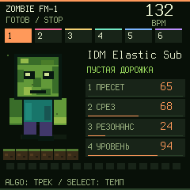
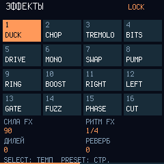
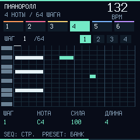
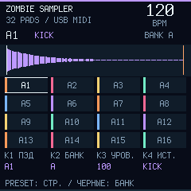

Groovebox 0.13.4 beta

Подсветка нот · клавиши шагов · EDIT удаляет ноту
Сыграть в эмуляторе ↗ · Послушать IDM-банк ↗ZOMBIE / USB MIDI
Редактируй звук и устанавливай Zombie Core прямо из браузера. По обычному USB-кабелю.
Играть на FM-1 в браузере →Открыть студию →Для знакомства устройство не нужно: синтезатор работает и в браузере.
Zombie · настоящая панель ↗Groovebox / Piano Roll ↗Sampler / Pads ↗
FIRMWARE / USB
0.7.4Открой в Chrome или Edge на компьютере. Подключи FM-1 кабелем с передачей данных и закрой FL Studio, Ableton и другие вкладки редактора.
Устройство не подключено
Установка заменит прошивку FM-1. Сначала сохрани проекты и исходные WAV. Во время записи не отключай USB и не закрывай страницу.

Подсветка нот · клавиши шагов · EDIT удаляет ноту
Сыграть в эмуляторе ↗ · Послушать IDM-банк ↗Экран, кнопки, запись и звук работают на коде прошивки. Можно проверить паттерн и управление до установки.
Выбрать 0.13.4 beta для установки ↗240 × 240 · 256 colors · host render

ALGO: track · SEQ + OCT: bank · EDIT + OCT: Undo / Redo
Управление / Controls ↗
5 synths + drum kit · 96 presets · piano roll / drum grid
Экраны из симулятора / simulator preview
Animation ↗ · Groove demo ↗

32 pads · 4 user slots · chop / reverse / loop
Экраны из симулятора / simulator preview
Animation ↗
Подключи FM-1 снова, выбери ту же версию и нажми «Найти FM-1», затем «Установить». Если загрузчик доступен, запись начнётся заново, а результат проверится после перезапуска.
Сэмплы и настройки передаются по USB прямо между браузером и FM-1. Для прослушивания без устройства открой студию и включи звук ПК.
Исходники прошивки и лицензии · GitHub ↗